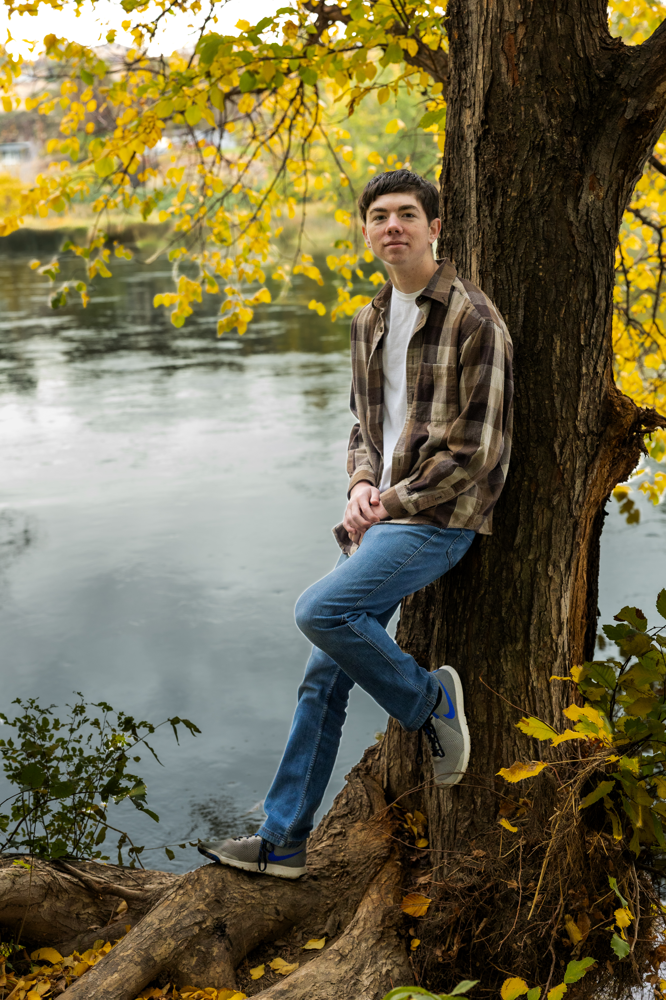

My name is Jacob Persinger. I am a sophomore at BYU-Idaho, pursuing a degree in Cyber Security. I love being outdoors, whether it be hiking, camping, backpacking, fishing, etc. or playing sports with friends. I am 18 years old and recently graduated high school, and because I did college in high school, I graduated high school with over 50 credits, putting me in the sophomore grade. My favorite sport is football, but pickleball is a close second. I have 5 siblings, and am the second oldest.